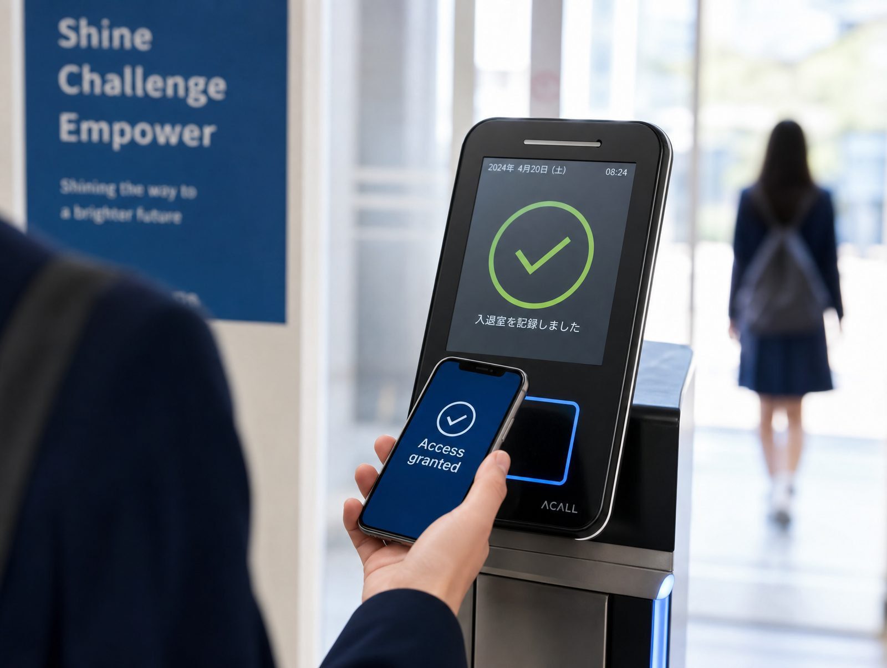

PRODUCT 01
SS-Pad
通信制高校専用 手書き強化タブレット
レポート用紙に手書きで回答し、先生に送信すると、オンラインで添削結果が返ってくる。タブレット学習でペーパーレスを実現する、専用設計の学習端末です。
生徒紙と同じ感覚で書きながら、提出も受け取りもスマートに。
学校レポートの郵送・配付・回収の手間がゼロに。
次世代教育学研究開発（NPRD）は、通信制高校の現場に寄り添い、 個別指導の強化・学習進捗の可視化・コンテンツの多様化・教員のデジタル化支援を、 最先端のICTで実現する教育テクノロジーカンパニーです。
手書き強化タブレットの導入実績
オンラインレポート添削利用者数
出席管理システムの利用生徒数
校務管理システムの導入校数
手書き学習・添削・出席管理・校務管理。 生徒の学びと学校運営の両輪を、ひとつのプラットフォームで一気通貫に支援します。
通信制高校専用 手書き強化タブレット
レポート用紙に手書きで回答し、先生に送信すると、オンラインで添削結果が返ってくる。タブレット学習でペーパーレスを実現する、専用設計の学習端末です。
生徒紙と同じ感覚で書きながら、提出も受け取りもスマートに。
学校レポートの郵送・配付・回収の手間がゼロに。
オンラインレポート添削システム「スマスク」
タブレットなのに超スムーズに手書きOK。極細筆記対応で、数式・漢字・英字もストレスなく書ける、通信制高校のためのレポートシステムです。
生徒いつでもどこでも、自分のペースでレポートを進められる。
学校添削のやり取りが即時化し、指導サイクルが加速。

生徒＆職員用ICカード出席管理システム
生徒ごとに学校へのチェックイン・チェックアウト、教室への入退室をスケジュール管理。保護者と共有でき、帰宅時間やお迎え忘れの心配を減らします。
生徒「ちゃんと登校した」が、自然に保護者と共有される安心感。
学校出席集計・連絡業務が大幅に省力化。
クラウド方式 基幹校務管理システム
募集から卒業まで、校内のあらゆる生徒情報がひとつのシステムでつながる。入学願書受付・成績・出席・卒業データまで全てが連動し、業務効率が大幅にUPします。
生徒手続きや情報変更が、シンプル・スピーディに。
学校分散していた業務データを一元化し、意思決定を迅速化。
通信教育の現場と長く向き合ってきたからこそ提供できる、 「教える側」と「学ぶ側」の両方に効くソリューションです。
生徒一人ひとりの理解度に合わせ、レポート添削と学習サポートをきめ細かく実施。
提出状況・添削結果・出席まで、すべてのデータがダッシュボードで一望できる。
紙のレポートに加え、動画・クラウド教材まで。学び方の選択肢を広げます。
校務をクラウドで一元化し、先生方が本来の教育活動に専念できる環境を実現。
当社は通信制高等学校を対象に、教育関連システムの開発と提供を行っています。 急速に変化する教育の現場で生徒一人ひとりの学びを支援するために、私たちは常に革新を追求し、最先端の技術を駆使して効果的なシステムを提供しています。
私たちのミッションは、全ての生徒が自分のペースで学び、成長できる環境を作り出すこと。 個別指導の強化、学習進捗の可視化、学習コンテンツの多様化を図り、教育の質を向上させるとともに、生徒が未来に羽ばたく力を育みます。 そして教員の皆様が、本来の教育活動に専念できるよう、デジタル化と業務効率化をサポートしてまいります。